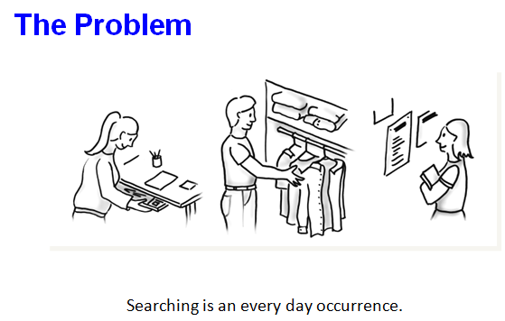
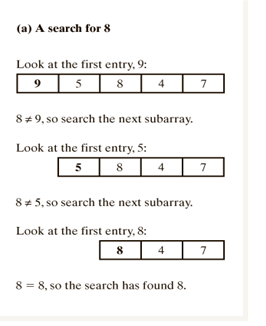
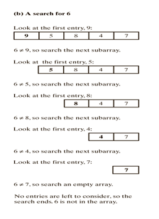
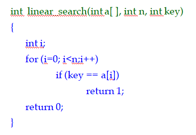
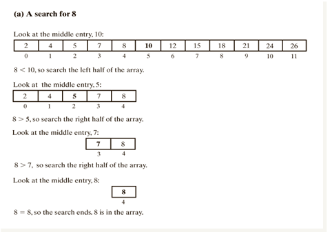
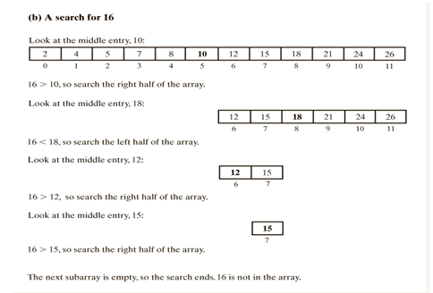
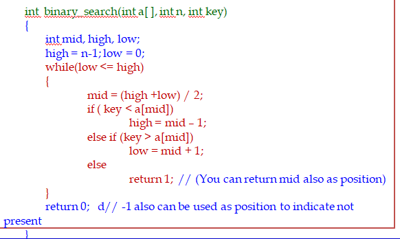

4.3 Searching

A search algorithm is an algorithm for finding an item with specified properties among a collection of items.
- The items may be stored individually as records in a database
- They may be elements of a search space defined by a mathematical formula or procedure, such as the roots of an equation with integer variables;
- They may be a combination of the two, such as the Hamiltonian circuits of a graph.
Types of search algorithms :
Algorithms that don't make any assumptions about the order of the list
- Ex : Sequential/Linear Search - Compares the element to be found with every value in the list sequentially one after another
Algorithms that assume the list is already in order.
- Ex : Binary Search - Based the value to be search, the search space is halved every time till the value is found.
4.3.1 Linear Searching
Searching in an Unsorted Array


Implementation

Analysis of Linear Searching
- Best case - O(1)
- Locate desired item first
- Worst case - O(n)
- Locate item at end of list; so, must look at all the items
- Average case - O(n)
- Must look at half the items
- O(n/2) is still O(n)
4.3.2 Binary Searching
Searching in an Sorted Array - Target found

Searching in an Sorted Array - Target Not found

Implementation

Analysis of Binary Searching
- Best case - O(1)
- Locate desired item first
- Worst case - O(logn)
- must look at all the items
- Average case - O(logn)
- Must look at half the items